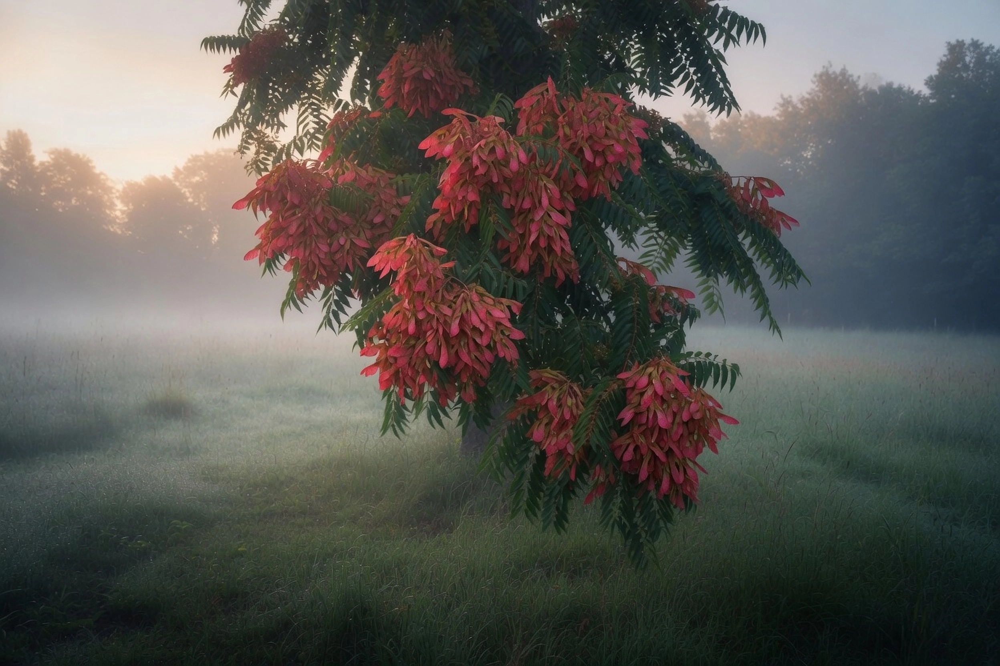
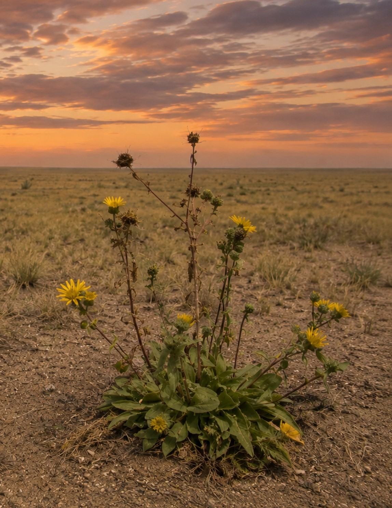
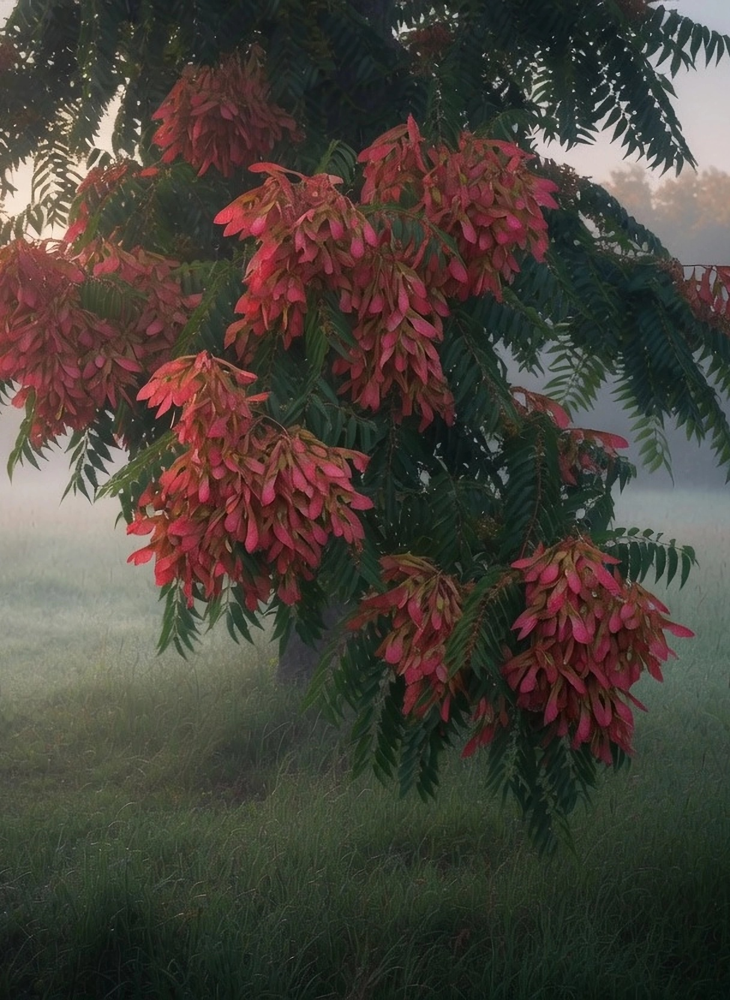
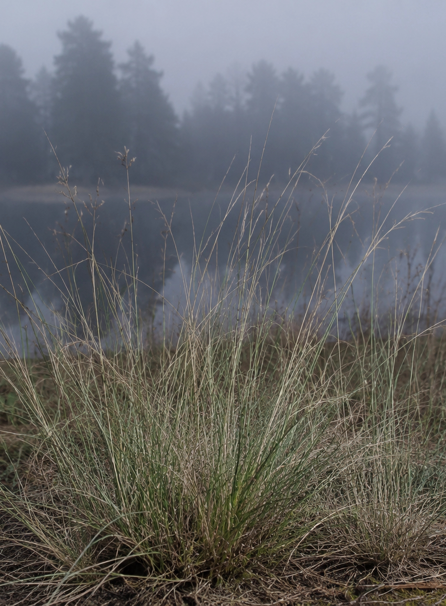
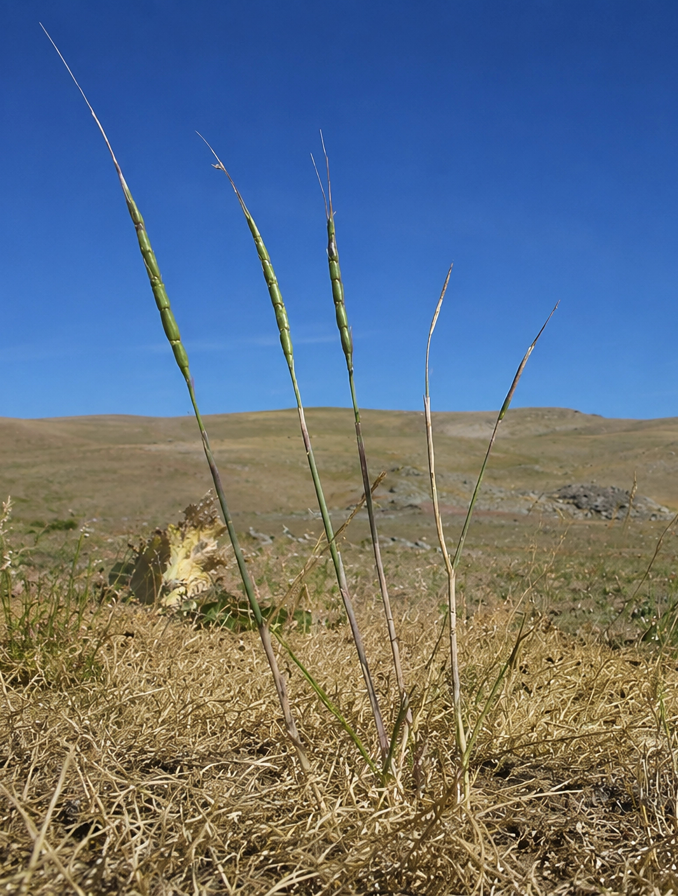
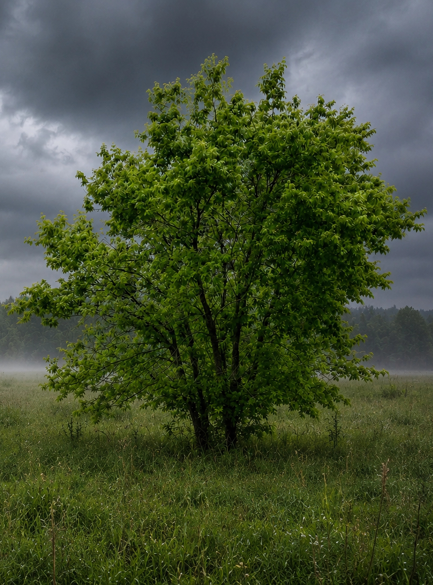

Дерево сем. кленовые
Клен американский
Клён ясенелистный, или клён америкаанский (лат. Ácer negúndo), — листопадное дерево до 25 метров высотой. Происходит из Северной Америки. Преднамеренно интродуцирован в Европу в XVII веке. В России (Санкт-Петербург, Императорский Ботанический сад, также Москва) произрастает с 1796 года. Уже в 1920-е годы стал наблюдаться его самосев в естественных условиях.
Инвазионный потенциал чрезвычайно велик. Клен американский обладает сильными аллелопатическими свойствами - активные вещества его листового опада подавляют рост других растений. В условиях пойм может образовывать почти одновидовые группировки, вытесняя другие древесно-кустарниковые растения. Осваивает новые территории с помощью разносимых ветром и водой плодов-двукрылаток, а также корневой поросли.
Инвазионный потенциал чрезвычайно велик. Клен американский обладает сильными аллелопатическими свойствами - активные вещества его листового опада подавляют рост других растений. В условиях пойм может образовывать почти одновидовые группировки, вытесняя другие древесно-кустарниковые растения. Осваивает новые территории с помощью разносимых ветром и водой плодов-двукрылаток, а также корневой поросли.

Травянистое растение
Гринделия
Grindelia squarrosa - дву- или однолетнее, реже многолетнее травянистое растение сем. астровые, 30-50 см высоты. Всё растение опушено, в верхней части с железистыми волосками, отчего растение липкое. Родина Сев. Америка
В условиях Волгоградской области произрастает по обочинам дорог, вдоль железнодорожного полотна, на окраинах полей и пастбищ, по берегам водоемов.
Гринделия активно осваивает новые территории путем заноса семянок, захватывая в первую очередь антропогенно нарушенные мостообитания. Имеет высокую семенную продуктивность, до нескольких тысяч зрелых семянок. Снижает видовое разноообразие растительных сообществ, подавляя жизнедеятельность других растений вблизи себя.
В условиях Волгоградской области произрастает по обочинам дорог, вдоль железнодорожного полотна, на окраинах полей и пастбищ, по берегам водоемов.
Гринделия активно осваивает новые территории путем заноса семянок, захватывая в первую очередь антропогенно нарушенные мостообитания. Имеет высокую семенную продуктивность, до нескольких тысяч зрелых семянок. Снижает видовое разноообразие растительных сообществ, подавляя жизнедеятельность других растений вблизи себя.

Дерево сем. симарубовые
Айлант высочайший, "Китайский ясень"
Стройное, высокое (20-30 м) дерево с темно-серой корой и длинными перистыми листьями. Родина - Восточный Китай, Корея. В России известен в Крыму, Причерноморье, Северном Кавказе, Ростовской, Саратовской и Волгоградской областях.
Вне культуры айлант поселяется на сорных и мусорных местообитаниях (вдоль заборов, в дачных массивах), проникает в овраги и балки. Активно распростаняется в лесах Волго-Ахтубинской поймы.
Растение - аллелопат: другие виды угнетаются в радиусе до 5 м от ствола айланта. По этой причине может образовывать заросли только этого вида. Плоды распространяются ветром на большие расстояния от материнских растений, по этой причине обладает значительным инвазионным потенциалом.
Вне культуры айлант поселяется на сорных и мусорных местообитаниях (вдоль заборов, в дачных массивах), проникает в овраги и балки. Активно распростаняется в лесах Волго-Ахтубинской поймы.
Растение - аллелопат: другие виды угнетаются в радиусе до 5 м от ствола айланта. По этой причине может образовывать заросли только этого вида. Плоды распространяются ветром на большие расстояния от материнских растений, по этой причине обладает значительным инвазионным потенциалом.

Многолетний злак
Споробол скрытотычинковый
Sporobolus cryptandrus - многолетний злак, сем. мятликовые. Образует плотную дерновину, напоминающую дерновину ковылей или типчаков. Листья узкие 8-15 см длиной.
Произрастает в Сев. Америке. В Европу вид попал в качестве заносного растения в начале XX века. В нашей стране впервые был обнаружен в 1988 г. на территории Волгоградской области (пос. Приморский), затем в Ростовской области. Предположительно занос произошел вместе с комбикормами изи США. На данным момент занимает большие площади некоторых районов нашей области преимущественно в местах культивирования бахчевых культур.
За счет специфических особенностей фотосинтеза в условиях засушливого климата имеет заметные преимущества перед видами местной флоры. По этой причине инвазионный потенциал его весьма велик.
Произрастает в Сев. Америке. В Европу вид попал в качестве заносного растения в начале XX века. В нашей стране впервые был обнаружен в 1988 г. на территории Волгоградской области (пос. Приморский), затем в Ростовской области. Предположительно занос произошел вместе с комбикормами изи США. На данным момент занимает большие площади некоторых районов нашей области преимущественно в местах культивирования бахчевых культур.
За счет специфических особенностей фотосинтеза в условиях засушливого климата имеет заметные преимущества перед видами местной флоры. По этой причине инвазионный потенциал его весьма велик.

Травянистое растение
Эгилопс цилиндрический
Aegilops cylindrica Host - одно- или двулетнее травянистое растение сем. мятликовых. В естественных условиях встречается в Центральной, Южной и Восточной Европе. В пределы Нижнего Поволжья, в том числе и на территорию Волгоградской области, вид проник в результате изменения климатических условий в сторону засушливости. В Волго-Ахтубинской пойме стал массовым сорняком.
Для растения свойственно саморасселение семенного материала вблизи материнского растения. Эгилопсис - опасный, трудно искоренимый сорняк, который конкурирует с пшеницей и другими культурами за питательные вещества, свет и влагу, снижая урожайность до 40%.
Для растения свойственно саморасселение семенного материала вблизи материнского растения. Эгилопсис - опасный, трудно искоренимый сорняк, который конкурирует с пшеницей и другими культурами за питательные вещества, свет и влагу, снижая урожайность до 40%.

Гринделия

Айлант

Споробол

Эгилопс

Клен американский